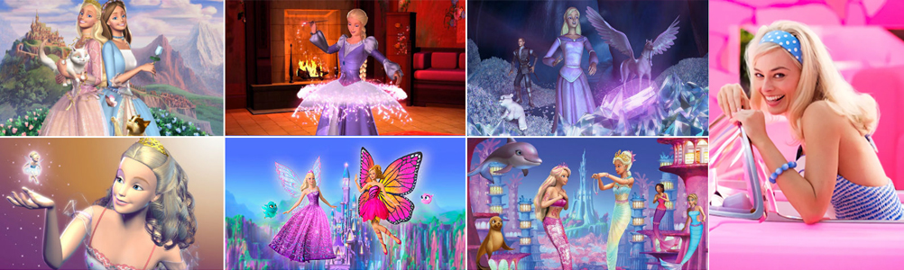

Listado de todas las películas de Barbie

Barbie tiene multitud de películas de animación, algunas son versiones de cuentos populares, otras son basadas en el universo de Barbie e ¡incluso Barbie tiene una película interpretada con personas!
Desde su debut en Barbie y las estrellas del rock: Fuera de este mundo (Barbie and The Sensations: Rockin' Back to Earth ), estrenada en el año 1987 y tras una ausencia de catorce años, Mattel comisionó a Barbie para hacer el papel de heroína de varias películas con temas de princesas o hadas, acompañadas de una franquicia de muñecas y accesorios relacionados con cada película. Barbie ha sido una fabulosa actriz virtual protagonizando un gran número de películas y cortos a lo largo de los años, hasta el año 2023 donde al fin, Barbie ha sido interpretada por personas humanas. ¿Cómo será la próxima película de Barbie?, ¿Con qué nos sorprenderá Mattel?
A continuación se muestra un listado con todas las películas de Barbie, indistintamente si han pasado por la gran pantalla, si se han estrenado en alguna plataforma de televisión o de streaming, o si se han editado directamente en cinta VHS, DVD, Blu-Ray o el que fuere.
- Barbie: La película (2023)

- Barbie: poder de sirena (2022)
- Barbie: Big City, Big Dreams (2021)
- Barbie y Chelsea, el cumpleaños perdido (2021)
- Barbie: Aventuras de una princesa (2020)
- Barbie Dreamtopia: Festival de diversión (2017, TV)
- Barbie y los delfines mágicos (2017)
- Barbie: un mundo de videojuego (2017)
- Barbie y hermanas en busca de los peritos (2016)
- Barbie: Aventura espacial (2016)
- Barbie: Dreamtopia (2016, TV)
- Barbie escuadrón secreto (2016)
- Barbie Súper Princesa (2015)
- Barbie campamento Pop (2015)
- Barbie y sus hermanas: Perritos en busca del tesoro (2015)
- Barbie: La princesa de las perlas (2014)
- Barbie y la puerta secreta (2014)
- Barbie y las zapatillas mágicas (2013)
- Barbie Mariposa y la Princesa de las Hadas (2013)
- Barbie y sus hermanas en Una aventura de caballos (2013)
- Barbie: La Princesa y La Estrella Pop (2012)
- Barbie: Una Aventura de sirenas 2 (2012)
- Barbie: El secreto de las hadas (2011)
- Barbie: Una navidad perfecta (2011)
- Barbie: Escuela de princesas (2011)
- Barbie: A Camping We Will Go (2011) (corto)
- Barbie: Moda mágica en París (2010)
- Barbie: Una aventura de sirenas (2010)
- Barbie y las tres mosqueteras (2009)
- Barbie Pulgarcita (2009)
- Barbie en Un cuento de Navidad (2008)
- Barbie y el castillo de diamantes (2008)
- Barbie Mariposa (2008)
- Barbie en la princesa de la isla (2007)
- Barbie Fairytopia: La magia del arcoíris (2007)
- Barbie y las 12 princesas bailarinas (2006)
- Barbie Fairytopia: Mermaidia (2006)
- Barbie y la magia del pegaso (2005)
- El diarios de Barbie (2005)
- Barbie: Fairytopia (2005)
- My Scene, estrellas de Hollywood (2005)
- Barbie: la Princesa y la Costurera (2004)
- Barbie en el lago de los cisnes (2003)
- Barbie en Princesa Rapunzel (2002)
- Barbie en cascanueces (2001)
- Barbie and the Rockers: Out of This World (1987, TV)
- Barbie and The Sensations: Rockin' Back to Earth (1987, TV)
¿Falta alguna película? Por favor, escríbeme por redes sociales para que pueda incluirla.